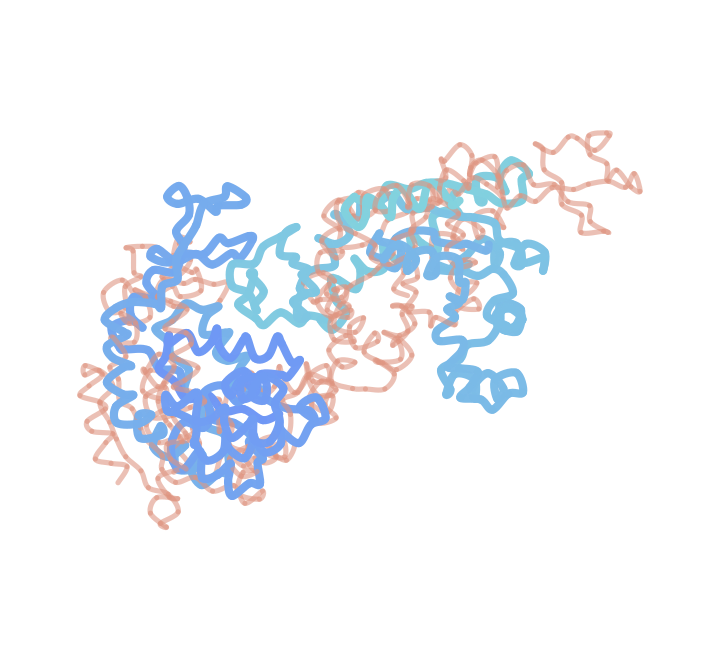
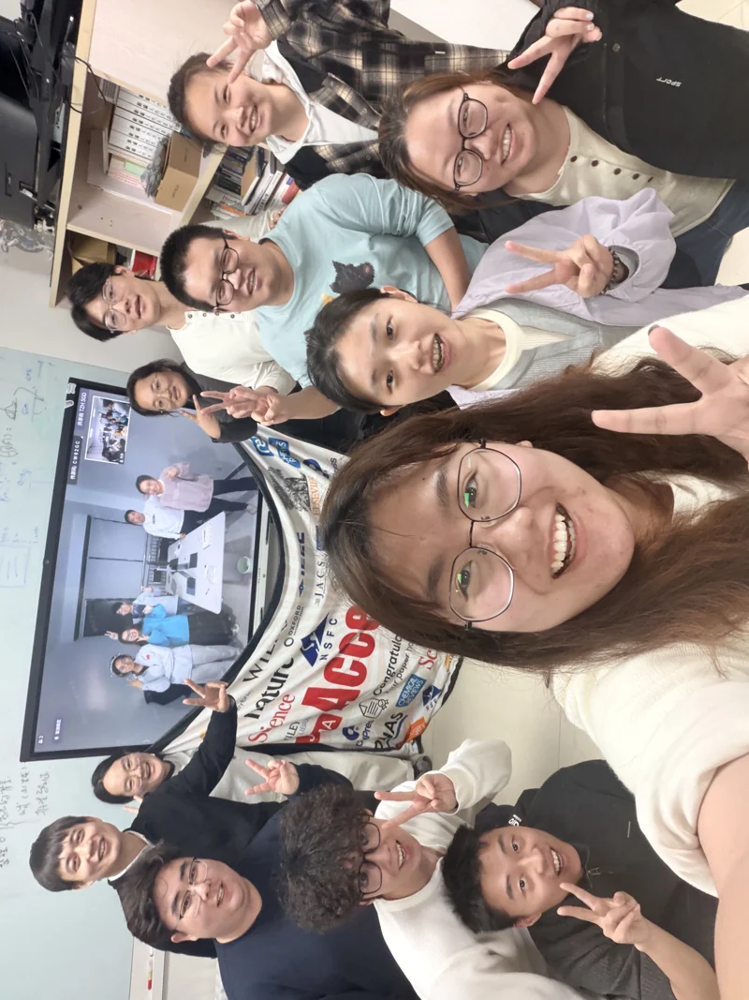

01 / PROTEIN DYNAMICS
Conformational ensembles
Molecular dynamics and generative models for exploring protein flexibility and multi-chain conformations.
Explore the researchRen Protein Design Group
Computational methods, models, and datasets for understanding and designing proteins.
Connecting sequences, structures, and molecular motion.

What we study
We develop computational tools to study protein conformational ensembles, evaluate antibody interactions, and optimize biological sequences.
Molecular dynamics and generative models for exploring protein flexibility and multi-chain conformations.
Explore the researchDeep learning for antigen–antibody interface scoring and screening AI-designed antibody candidates.
Explore the researchSequence modeling and cross-attention architectures for codon optimization.
Explore the researchSelected projects
Models, data, and tools for computational protein research.
A conditional diffusion model for exploring protein conformational ensembles, with native support for multi-chain inputs.
An antibody binding unified scoring framework for evaluating antigen–antibody interfaces and screening AI-designed antibodies.
A BERT-based architecture tailored for codon optimization using the cross-attention mechanism.
The people behind the work
Ren Protein Design Group develops computational methods, models, and datasets to study and design proteins.
Our public projects connect protein dynamics, molecular interactions, and sequence modeling.
Meet our group
Around the group
Explore our research directions, team, and public code and data resources.
Group updatesExplore our open code, workflows, models, and datasets.
Proteins occupy ensembles of conformations. Our public resources use molecular simulations and generative modeling to explore this structural flexibility.

ABUS integrates geometric and physicochemical interface features in a deep learning framework for antigen–antibody interface scoring. The repository includes preprocessing, inference, and training utilities for evaluating candidate complex structures.
Explore ABUS ↗CodonBERT uses a BERT-based architecture and cross-attention to model codon preferences. Its public implementation supports codon optimization and model training.
Explore CodonBERT ↗Our public projects connect protein dynamics, molecular interactions, and sequence modeling. Explore the repositories to find project-specific documentation, contributors, and discussion channels.
VISIT OUR GITHUB ORGANIZATION ↗Zilin Ren et al. · Bioinformatics, Volume 40, Issue 7, btae330.
DOI: 10.1093/bioinformatics/btae330
For project-specific references and citation instructions, please consult the corresponding repository README.
RPDGroup's website brings together our research directions, team photo, selected publication, and public code and data resources.
Explore our resources →Ren Protein Design Group develops computational methods, models, and datasets to study and design proteins. Our public work spans molecular dynamics, conformational ensemble modeling, antibody interface evaluation, and codon optimization.
We share code and workflows through our GitHub organization. Each project provides its own installation instructions, examples, access information, licensing, and citation guidance.
Discover our research →For installation help, reproducibility questions, or feedback on a model or dataset, open an issue in the corresponding project repository.
Find a project →Visit our GitHub organization for public projects and their discussion channels. Project-specific collaboration inquiries can be raised through the relevant repository.
RPDGroup on GitHub ↗Conditional diffusion modeling of protein conformational ensembles with multi-chain inputs.
Small-protein molecular dynamics ensembles and associated simulation and analysis workflows.
Preprocessing, inference, and training tools for antigen–antibody interface scoring.
A BERT-based cross-attention architecture for codon optimization.
Try a different keyword or clear the filters.
Check the license and citation guidance for each resource before use. Model and dataset access requirements are documented by the respective projects.